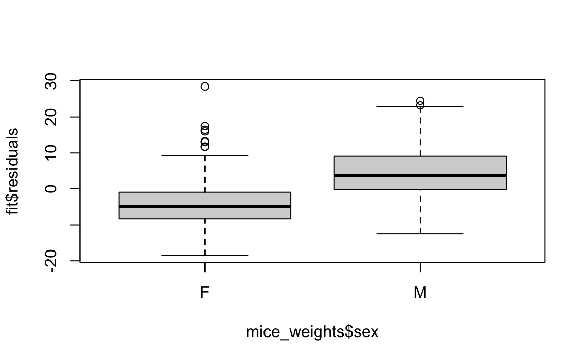
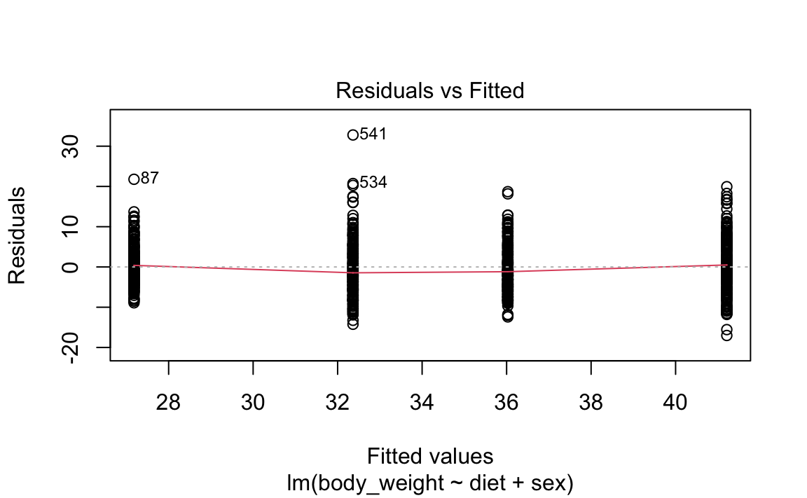
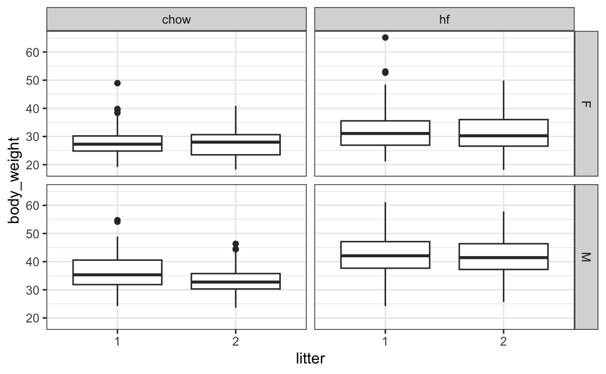

16 Treatment effect models
Up to now, all our linear models have been applied to two or more continuous random variables. We assume the random variables are multivariate normal and use this to motivate a linear model. This approach covers many real-life examples of linear regression. However, linear models have many other applications. One of the most popular is to quantify treatment effects in randomized and controlled experiments. One of the first applications was in agriculture, where different plots of lands were treated with different combinations of fertilizers to try to determine if they were effective. In fact the use of \(Y\) for the outcome in Statistics, is due to the mathematical theory being developed for crop yield as the outcome.
Since, the same ideas have been applied in other areas, such as randomized trials developed to determine if drugs cure or prevent a diseases or if policies have an effect on social or educational outcomes. In the latter example, we think of the policy intervention as a treatment and follow the same mathematical procedure. The analyses used in A/B testing, widely used today by internet companies, are based on treatment effects models. Furthermore, the use of these models has been extended to observational studies where analysts attempt to use linear models to estimate effects of interest while accounting for potential confounders. For example, to estimate the effect of a diet high on fruits and vegetables on blood pleasure, we would have to adjust for factors such as age, sex, and smoking status.
In this chapter we consider an experiment testing for the effect of a high-fat diet on mouse physiology. Mice were selected and divided at random into two groups, one group receiving a high-fat diet, considered the treatment and the other group left as control and receiving the usual chow diet. The data is included in the dslabs package:
A boxplot shows that the high fat diet mice are, on average, heavier.

But, given that we divided the mice at random, is it possible the observed difference is simply due to chance? Here, we can compute the sample average and standard deviation of each group and perform statistical inference on the difference of these means, similar to what we did for election forecasting in Chapters Chapter 9 and Chapter 10.
16.1 Comparing group means
The sample averages for the two groups, high-fat and chow diets, are different:
But this is a random sample of mice and the assignment to the diet group is also random. So is this difference due to chance? We will use hypothesis testing, first described in Chapter Chapter 9, to answer this question.
Denote with \(\mu_1\) and \(\sigma_1\) the weight average and standard deviation we would observe if the entire population of mice were on the high-fat diet. Define \(\mu_0\) and \(\sigma_0\) similarly for the chow diet. Define \(N_1\) and \(N_0\) as the sample sizes, let’s call them \(\bar{X}_1\) and \(\bar{X}_0\) as the sample averages, and \(s_1\) and \(s_0\) the sample standard deviations for the for the high-fat and chow diets, respectively. Because this is a random sample the central limit theorem tells us that the difference in averages \(bar{X}_1 - \bar{X}_0\) follows a normal distribution with expected value \(\mu_1-\mu_0\) and standard error \(\sqrt{\frac{s_1^2}{N_1} + \frac{s_0^2}{N_0}}\). If we define the null hypothesis as the high-fat diet having no effect, or \(\mu_1 - \mu_0 = 0\), the the following summary statistic
\[ t = \frac{\bar{X}_1 - \bar{X}_0}{\sqrt{\frac{s_1^2}{N_1} + \frac{s_0^2}{N_0}}} \]
follows a standard normal distribution when the null hypothesis is true, which implies we can easily compute the probability of observing a value as large as the one we did:
Here \(t\) is well over 3, so we don’t really need to compute the p-value 1-pnorm(t_stat) as we know it will be very small.
Note that when \(N\) is not large, then the CLT does not apply. However, if the outcome data, in this case weight, follows a normal distribution, then \(t\) follows a t-distribution with \(N_1+N_2-2\) degrees of freedom. So the calculation of the p-value is the same except we use 1-pt(t_stat, with(stats, n[2]+n[1]-2) to compute the p-value.
Because using differences in mean are so common in scientific studies, this t-statistic is one of the most widely reported summaries. When use it in a hypothesis testing setting, it is referred to a performing a t test.
In the computation above we computed the probability of t being as large as what we observed. However, when we are equally interested in both directions, for example, either an increase or decrease in weight, then we need to compute the probability of t being as extreme as what we observe. The formula simply changes to using the absolute value: 1 - pnorm(abs(t-test)) or 1-pt(t_stat, with(stats, n[2]+n[1]-2).
16.2 One factor design
Although the t-test is useful for cases in which we only account for two treatments, it is common to have other variables affect our outcomes. Linear models permit hypothesis testing in more general situations. We start the description of the use linear models for estimating treatment effects by demonstrating how they can be used to perform t-tests.
If we assume that the weight distributions for both chow and high-fat diets are normally distributed, we can write the following linear model to represent the data:
\[ Y_i = \beta_0 + \beta_1 x_i + \varepsilon_i \] with \(X_i\) 1 if the \(i\)-th mice was fed the high-fat diet and 0 otherwise and the errors \(\varepsilon_i\) independent and normally distributed with expected value 0 and standard deviation \(\sigma\). Note that this mathematical formula looks exactly like the model we wrote out for the father-son heights. However, the fact that \(x_i\) is now 0 or 1 rather than a continuous variable, permits us to use it in this different context. In particular notice that now \(\beta_0\) represents the population average height of the mice on the chow diet and \(\beta_0 + \beta_1\) represents the population average for the weight of the mice on the high-fat diet.
A nice feature of this model is that \(\beta_1\) represents the treatment effect of receiving the high-fat diet. If the null hypothesis that the high-fat diet has no effect can be quantified as \(\beta_1 = 0\). We can then estimate \(\beta_1\) and answer the question of weather or not the observed difference is real by computing the estimates being as large as it was under the null. So how do we estimate \(\beta_1\) and a standard error for the estimate?
A powerful characteristics of linear models is that we can can estimate the parameters \(\beta\)s and their standard errors with the same LSE machinery:
fit <- lm(body_weight ~ diet, data = mice_weights)Because diet is a factor with two entries, the lm function knows to fit the model above with a \(x_i\) a indicator variable. The summary function shows us the resulting estimate, standard error, and p-value:
coefficients(summary(fit))
#> Estimate Std. Error t value Pr(>|t|)
#> (Intercept) 31.54 0.386 81.74 0.00e+00
#> diethf 5.14 0.548 9.36 8.02e-20or using broom we can write:
The statistic computed here is the estimate divided by its standard error: \(\hat{beta}_1 / \hat{\mbox{SE}}(\hat{beta}_1)\). In the case for the simple one-factor model, we can show that this statistic is almost equivalent to the t-test. Intuitively it makes since both \(\hat{\beta_1}\) and the numerator of the t-test are estimates of the treatment effect. In fact, we can see that we obtain a number similar to the \(t\) computed in the previous section.
c(coefficients(summary(fit))[2,3], t_stat)
#> [1] 9.36 9.34One minor difference is that the linear model does not assume a different standard deviation for each population. Instead, both populations share \(\mbox{SD}(\varepislon)\) as a standard deviation. Note that, although we do not show how to do it with R here, we can redefine the linear model to have different standard errors for each group.
In the linear model description provided here we assumed \(\varepsilon\) follows a normal distribution. This assumption permits us to show that the statistics formed by dividing estimates by their estimated standard errors follow t-distribution, which in turn permits us to estimate p-values or confidence intervals. However, note that we do not need this assumption to compute the expected value and standard error of the least squared estimates. Furthermore, if the number of observations in large enough, then the central limit theorem applies and we can obtain p-values and confidence intervals even without the normal distribution assumption.
16.3 Two factor designs
Note that this experiment included male and female mice, and male mice are known to be heavier. This explains why the residuals depend on the sex variable:
boxplot(fit$residuals ~ mice_weights$sex)
This misspecification can have real implications since if more male mice received the high-fat diet, then this could explain the increase. Or if less received it, then we might underestimate the diet effect. Sex might be a confounder. Our model can certainly be improved.
From examining the data:
mice_weights |> ggplot(aes(diet, log2(body_weight), fill = sex)) + geom_boxplot()
we see that there diet effect is observed for both sexes and that males are heavier than females. Although not nearly as obvious, it also appears the diet effect is stronger in males. A linear models that permits a different expected value four groups, 1) female on chow diet, 2) females on high-fat diet, 3) male on chow diet, and 4)males on high-fat diet,
\[ Y_i = \beta_1 x_{i,1} + \beta_2 x_{i,2} + \beta_3 x_{i,3} + \beta_4 x_{i,4} + \varepsilon_i \] with the \(x_i\)s indicator variables for each of the four groups. However, with this representation, none of the \(\beta\)s represent the effect of interest: the diet effect. Furthermore, we now are accounting for the possibility that the diet effect is different for males and females have a different, and can test that hypothesis as well.
A powerful feature of linear models is that we can rewrite the model so that we still have a different expected value for each group, but the parameters represent effects we are interested. So, for example, in the representation
\[ Y_i = \beta_0 + \beta_1 x_{i,1} + \beta_2 x_{i,2} + \beta_3 x_{i,1} x_{i,2} + \varepsilon_i \] with \(x_{i,1}\) and indicator that is one if you have the treatment and \(x_{i,2}\) an indicator that is one if you are male, the \(\beta_1\) can be interpreted as the treatment effect for females, \(\beta_2\) as the difference between males and females, and \(\beta_3\) the added treatment effect for males. In Statistics, this last effect is referred to as an interaction effect. The \(\beta_0\) is consider the baseline value which is the average weight of females on the chow diet.
Statistical textbooks describes several other ways in which the model can be rewritten to obtain other types of interpretations. For example, we might want \(\beta_2\) to represent the average treatment effect between females and males, rather that the female treatment effects. This is achieved by defining what contrasts we are interested.
In R we can specific this model using the following
fit <- lm(body_weight ~ diet*sex, data = mice_weights)The * implies that the term that multiplies \(x_{i,1}\) and \(x_{i,2}\) should be included, along with the \(x_{i,1}\) and \(x_{i,2}\) terms.
tidy(fit, conf.int = TRUE) |> filter(!str_detect(term, "Intercept"))
#> # A tibble: 3 × 7
#> term estimate std.error statistic p.value conf.low conf.high
#> <chr> <dbl> <dbl> <dbl> <dbl> <dbl> <dbl>
#> 1 diethf 3.88 0.624 6.22 8.02e-10 2.66 5.10
#> 2 sexM 7.53 0.627 12.0 1.27e-30 6.30 8.76
#> 3 diethf:sexM 2.66 0.891 2.99 2.91e- 3 0.912 4.41Note that the male effect is larger that the diet effect, and the diet effect is statistically significant for both sexes, with the males having a higher effect by between 1 and 4.5 grams.
A common approach applied when more than one factor is thought to affect the measurement is to simply include an additive effect for each factor like this:
\[ Y_i = \beta_0 + \beta_1 x_{i,1} + \beta_2 x_{i,2} + \varepsilon_i \]
In this model, the \(\beta_1\) is a general diet effect that applies regardless of sex. In R we use the following code using a + instead of *:
fit <- lm(body_weight ~ diet + sex, data = mice_weights)Because their a strong interaction effect, a diagnostic plots shows that the residuals are biased: the average negative for females on the diet and positive for the males on the diet, rather than 0.
plot(fit, which = 1)
Scientific studies, particularly within epidemiology and social sciences, frequently omit interaction terms from models due to the high number of variables. Adding interactions necessitates numerous parameters, which, in extreme cases, may prevent the model from fitting. However, this approach assumes that the interaction terms are zero, which, if incorrect, can skew the results’ interpretation. Conversely, when this assumption is valid, models excluding interactions are simpler to interpret as parameters are typically viewed as the extent to which the outcome increases with the assigned treatment.
Linear models are very flexible and can be applied in many contexts. For example, we can include many more factors than 2. We have just scratched the surface of how linear models can be used to estimate treatment effects. We highly recommend learning more about this through linear model textbooks and R manuals on using the lm, contrasts, and model.matrix functions.
16.4 Analysis of variance
In the example we have examined, each treatment had only two levels: diet and chow and high-fat and sex had female and male. However, often we have variables of interest that have more than one level. For example, we might have tested a third diet on the mice. In statistics textbooks these variables are referred to as factor. In these cases it is common to want to know rather than the effect of each levels of the factor, a more general quantification regarding the variability across the levels. Analysis of variances or ANOVA does just this. The summary used to quantify the variability of a factor is the mean squared error of the estimated effects of each level.
As an example, consider that the mice in our dataset are actually from several generations:
table(mice_weights$gen)
#>
#> 4 7 8 9 11
#> 97 195 193 97 198We can fit a linear model that fits an effect for each of these generations along with diet and sex model previously fit:
fit <- lm(body_weight ~ diet * sex + gen, data = mice_weights)We can then perform an analysis of variance with the R aov function:
This analysis shows that the largest variation is explained by sex and then diet. The generation factor explains very little variation in comparison and is not found to be statistically significant.
In this book, we do not provide the details for how we compute this p-value. There are several books on analysis of variance and textbooks on linear models often include chapters on this topic. Those interested in learning more about these topics can consult these textbooks.
16.5 Exercises
1. Once you fit a model, the estimate of the standard error \(\sigma\) can be obtained like this:
Compute the estimate of \(\sigma\) using the model that includes just diet and a model that accounts for sex. Are the estimates the same? If not, why not?
2. One of the assumption of the linear model fit by lm is that the standard deviation of the errors \(\varepsilon_i\) is equal for all \(i\). This implies it does not depend on the expected value. Group the mice by their weight like this:
Compute the average and standard deviation for groups having more than 10 observations and use data exploration to see if this assumption holds?
3. The dataset also includes a variable indicating which litter the mice came from. Create a boxplot showing weights by litter. Use faceting to make separate plots for each diet and sex combination.
mice_weights |> ggplot(aes(litter, body_weight)) + geom_boxplot() + facet_grid(sex~diet)
4. Use a linear model to test for a litter effect. Account for sex and diet. Use ANOVA to compare the variability explained by litter to other factors.
5. The mouse_weights data includes two other outcomes: bone density and percent fat. Make a boxplot showing bone density by sex and diet. Compare what the visualizations shows for the diet effect by sex.
- Fit a linear model and test for the diet effect on bone density separately for each sex. Note that the diet effect is statistically significant for females but not for males. Then fit the model to the entire dataset that includes diet, sex and their interaction. Note that the diet effect is significant, yet the interaction effect is not. Explain how this can happen? Hint: To fit a model to the entire dataset that fit a separate effect for males and females you can use the formula
~ sex + diet:sex
7. In Chapter Chapter 10, we talked about pollster bias. We used visualization to motivate the presence of such bias. Here we will give it a more rigorous treatment. We will consider two pollsters that conducted daily polls. We will look at national polls for the month before the election.
We want to answer the question: is there a poll bias? Make a plot showing the spreads for each poll.
8. The data does seem to suggest there is a difference. However, these data are subject to variability. Perhaps the differences we observe are due to chance.
The urn model theory says nothing about pollster effect. Under the urn model, both pollsters have the same expected value: the election day difference, that we call \(\mu\).
To answer the question “is there an urn model?”, we will model the observed data \(Y_{i,j}\) in the following way:
\[ Y_{i,j} = \mu + b_i + \varepsilon_{i,j} \]
with \(i=1,2\) indexing the two pollsters, \(b_i\) the bias for pollster \(i\) and \(\varepsilon_ij\) poll to poll chance variability. We assume the \(\varepsilon\) are independent from each other, have expected value \(0\) and standard deviation \(\sigma_i\) regardless of \(j\).
Which of the following best represents our question?
- Is \(\varepsilon_{i,j}\) = 0?
- How close are the \(Y_{i,j}\) to \(\mu\)?
- Is \(b_1 \neq b_2\)?
- Are \(b_1 = 0\) and \(b_2 = 0\) ?
9. In the right side of this model only \(\varepsilon_{i,j}\) is a random variable. The other two are constants. What is the expected value of \(Y_{1,j}\)?
10. Suppose we define \(\bar{Y}_1\) as the average of poll results from the first poll, \(Y_{1,1},\dots,Y_{1,N_1}\) with \(N_1\) the number of polls conducted by the first pollster:
What is the expected values \(\bar{Y}_1\)?
11. What is the standard error of \(\bar{Y}_1\) ?
12. Suppose we define \(\bar{Y}_2\) as the average of poll results from the first poll, \(Y_{2,1},\dots,Y_{2,N_2}\) with \(N_2\) the number of polls conducted by the first pollster. What is the expected value \(\bar{Y}_2\)?
13. What is the standard error of \(\bar{Y}_2\) ?
14. Using what we learned by answering the questions above, what is the expected value of \(\bar{Y}_{2} - \bar{Y}_1\)?
15. Using what we learned by answering the questions above, what is the standard error of \(\bar{Y}_{2} - \bar{Y}_1\)?
16. The answer to the question above depends on \(\sigma_1\) and \(\sigma_2\), which we don’t know. We learned that we can estimate these with the sample standard deviation. Write code that computes these two estimates.
17. What does the CLT tell us about the distribution of \(\bar{Y}_2 - \bar{Y}_1\)?
- Nothing because this is not the average of a sample.
- Because the \(Y_{ij}\) are approximately normal, so are the averages.
- Note that \(\bar{Y}_2\) and \(\bar{Y}_1\) are sample averages, so if we assume \(N_2\) and \(N_1\) are large enough, each is approximately normal. The difference of normally distributed variables is also normally distributed.
- The data are not 0 or 1, so CLT does not apply.
18. We have constructed a random variable that has expected value \(b_2 - b_1\), the pollster bias difference. If our model holds, then this random variable has an approximately normal distribution and we know its standard error. The standard error depends on \(\sigma_1\) and \(\sigma_2\), but we can plug the sample standard deviations we computed above. We started off by asking: is \(b_2 - b_1\) different from 0? Use all the information we have learned above to construct a 95% confidence interval for the difference \(b_2\) and \(b_1\).
19. The confidence interval tells us there is relatively strong pollster effect resulting in a difference of about 5%. Random variability does not seem to explain it. We can compute a p-value to relay the fact that chance does not explain it. What is the p-value?
20. The statistic formed by dividing our estimate of \(b_2-b_1\) by its estimated standard error:
\[ \frac{\bar{Y}_2 - \bar{Y}_1}{\sqrt{s_2^2/N_2 + s_1^2/N_1}} \]
is the t-statistic. Now notice that we have more than two pollsters. We can also test for pollster effect using all pollsters, not just two. The idea is to compare the variability across polls to variability within polls.
For this exercise, create a new table:
Compute the average and standard deviation for each pollster and examine the variability across the averages and how it compares to the variability within the pollsters, summarized by the standard deviation.